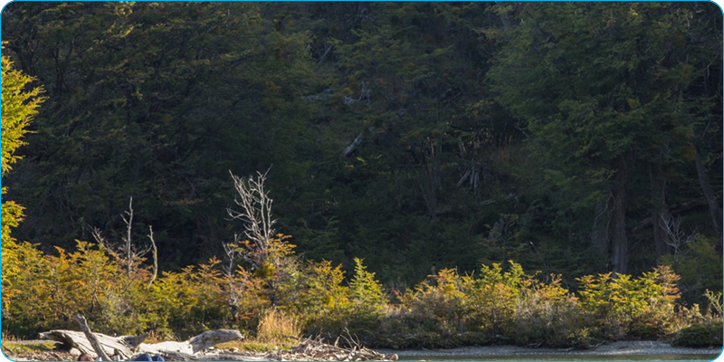

El Parque Nacional cuenta con 40 kilómetros de senderos de distintos niveles de dificultad y extensiones para disfrutar de la naturaleza del confín más austral de América del Sur.
Kayak/Canoa inflable
Dentro del Parque está permitido únicamente el uso de canoas inflables en ríos y lagos a través de excursiones organizadas. Se puede navegar en el lago Acigami, el río Lapataia y en un sector de Bahía Lapataia.

Pesca deportiva
Esta actividad en el Parque está habilitada entre el 1° de noviembre y el 1° de mayo. Sólo está permitida en:
Río Lapataia,
Río Ovando
. Además se debe tramitar un permiso especial para poder realizar esta actividad.
Playas
Ensenada Zaratiegui, la Baliza y Lago Acigami cuentan con playas ideales para disfrutar el paisaje austral en el fin del mundo.
No hay servicios públicos y las temperaturas de las aguas son muy bajas.